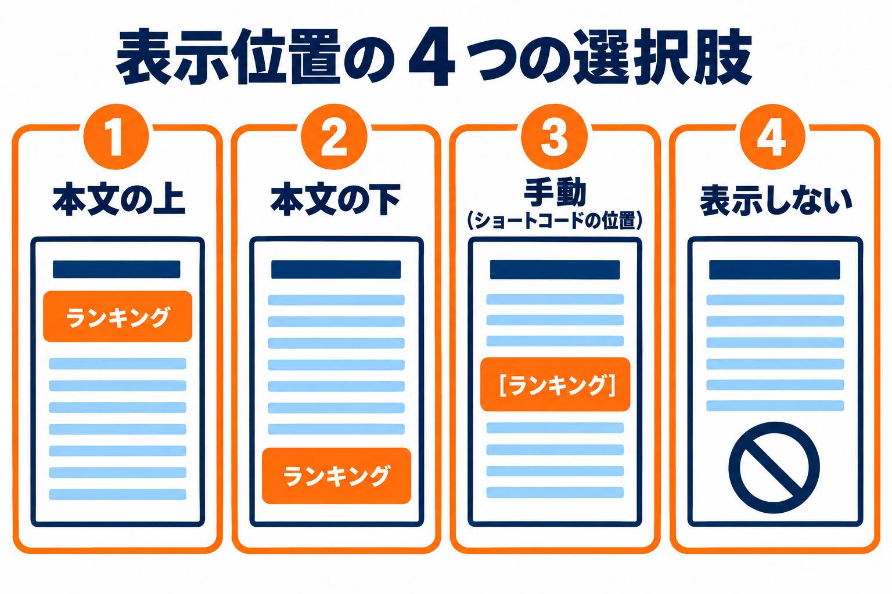
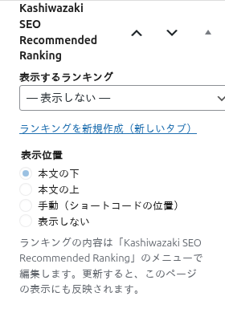
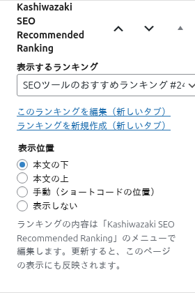
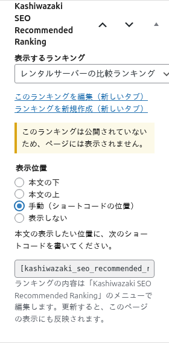
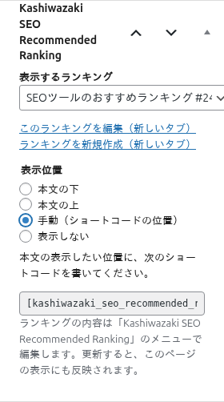

投稿の編集画面のボックス
投稿・固定ページ・カスタム投稿の編集画面で、表示するランキングと表示位置を選ぶボックスの使い方です。

ランキングを表示したいページの編集画面には、右側にボックス「Kashiwazaki SEO Recommended Ranking」があります。ここで、そのページにどのランキングを、どこに表示するかを選びます。
ボックスが出るページ
ボックスは、設定画面の「ランキングを選べる投稿タイプ」にチェックを入れた投稿タイプ（投稿・固定ページ・カスタム投稿）の編集画面に出ます。初期設定では、公開されているすべての投稿タイプにチェックが入っています。
使い方
1
ランキングを表示したい投稿・固定ページの編集画面を開きます。
2
右側のボックス「Kashiwazaki SEO Recommended Ranking」の「表示するランキング」で、表示するランキングを選びます。
3
「表示位置」を選びます。
4
ページを「更新」または「公開」します。ページを開いて、ランキングが表示されていることを確かめます。


項目の説明
表示するランキング
- プルダウンの先頭は「— 表示しない —」です。これを選ぶと、そのページには、ランキングを表示しません（保存すると、選択と表示位置が消えます）。
- ランキングは、名前順に並びます。名前のあとに「#数字」が付いています（ランキングの番号です）。
- 公開中のランキングのほか、自分が編集できる、公開前のランキング（下書きなど）も選べます。公開前のランキングには、名前のあとに「（下書き・表示されません）」のように、状態と注意が付きます。パスワードを付けた公開中のランキングには「（パスワード保護・表示されません）」が付きます。
- ランキングを選ぶと、その下に、「このランキングを編集（新しいタブ）」のリンクが出ます。新しいタブで、ランキングの編集画面が開きます。
- 「ランキングを新規作成（新しいタブ）」のリンクから、新しいランキングをつくれます（ランキングをつくる権限のある人だけに出ます）。つくったあとは、このページの編集画面を開き直すと、選べるようになります。
- 選んでいたランキングが見つからなくなったときは、「（見つからないランキング #数字・表示されません）」と表示されます。
公開していないランキングを選んだとき
公開前（下書きなど）のランキングを選ぶと、ボックスに「このランキングは公開されていないため、ページには表示されません。」と出ます。ランキングを公開すると、ページに表示されます。

表示位置
ランキングを選ぶと、選べるようになります。既定は「本文の下」です。
| 選択肢 | 結果 |
|---|---|
| 本文の下 | ページの本文の最後に、自動でランキングを表示します（既定）。 |
| 本文の上 | ページの本文の最初に、自動でランキングを表示します。 |
| 手動（ショートコードの位置） | 自動では表示しません。本文の好きな位置に書いた、ショートコードの位置に表示します。 |
| 表示しない | ランキングは選んだままにして、表示だけを止めます。自動の表示も、id のないショートコードの表示も止まります。id を書いたショートコードは、この選択に関係なく表示されます。 |
- 複数のページに分けた投稿（ページ送りのある投稿）では、「本文の上」は最初のページだけ、「本文の下」は最後のページだけに表示されます。
- パスワードで守られたページには、パスワードの入力前は表示されません。
- 投稿の一覧ページや、抜粋・フィードには、自動の表示は出ません。
手動のとき（ショートコードの案内）
表示位置を「手動（ショートコードの位置）」にすると、ボックスに、本文に書くショートコードが出ます。

- 欄をクリックすると、ショートコード
[kashiwazaki_seo_recommended_ranking]の全体が選択されます。コピーしてください。 - 本文の、表示したい位置に貼り付けて、ページを更新します。
ショートコードの 2 つの書き方
[kashiwazaki_seo_recommended_ranking]：このページで選んだランキングを表示します（id は書きません）。[kashiwazaki_seo_recommended_ranking id="123"]：番号を書いたランキングを表示します。ボックスでの選択に関係なく、どのページでも使えます。番号は、ランキングの編集画面のショートコード欄で分かります。
保存したときの動き
- ページを保存すると、選んだランキングと表示位置が、そのページに記録されます。
- 選んだ後、そのランキングをゴミ箱に入れても、ページの選択は残ります（表示はされません）。ゴミ箱から戻すと、また表示されます。ランキングを完全に削除すると、選択は外れます。
- ランキングの内容を直すときは、「Kashiwazaki SEO Recommended Ranking」のメニューで、ランキングを編集します。更新すると、このページの表示にも反映されます。
- ほかの人が作った公開前のランキングなど、自分が編集できないランキングは、新しく選べません。
ランキングが表示されないときは、トラブルシューティングも見てください。